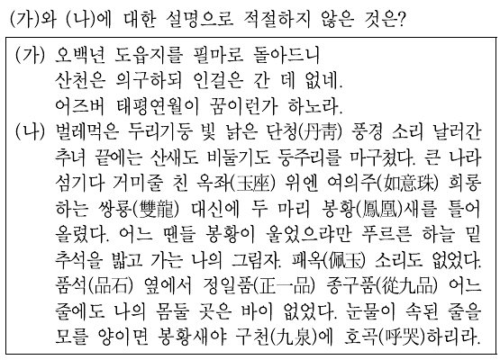

[android_korean_ver:2.09(111)]
(심사대기중)
: 정오표에 있는 사항을 반영함
(일부 이미지로 된 문제가 잘리는 버그 수정)
(예) 지9.21년10번 봉황수 등

: 국회8.16년 체크노트,검색에 표시안되는 버그 수정
----
소방.21년 추가(중세국어, 시조포함)
(수정 작업해서 다음 업데이트 때 반영할게용)
[android_korean_ver:2.08(110)]
: 정오표에 있는 사항을 반영함
업데이트 이후 튕기는 버그가 있어 수정
(경1.2021년 4번문제)
(불편드려 죄송)
(현버전:2.07)[공지.정오.오류]
지9.2021년 2번
: -로서와 -로써에 밑줄이 빠져서 표시됨
지9.2021년 5번
음성상징어(=의성어,의태어)
(의성어,의태어 빼먹음)
[android_korean_ver:2.07(109)]
:정오표에 있는 일부 저질 오타.해설 수정
[객관식 문제]
:지9.2021년 추가(시조 포함)
소방.2020년 추가(시조 포함)